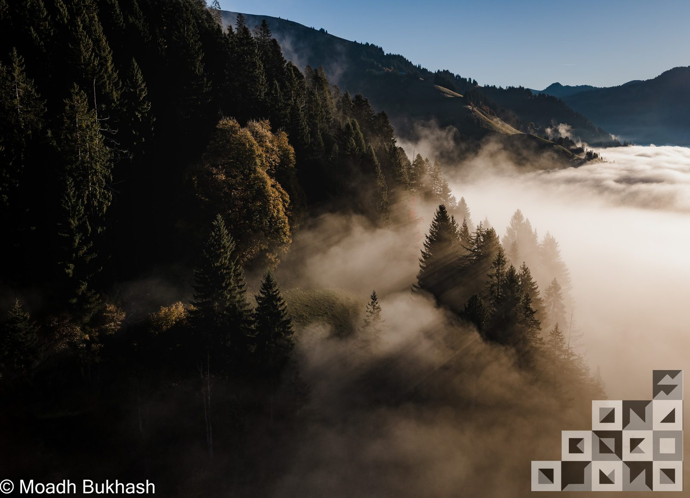
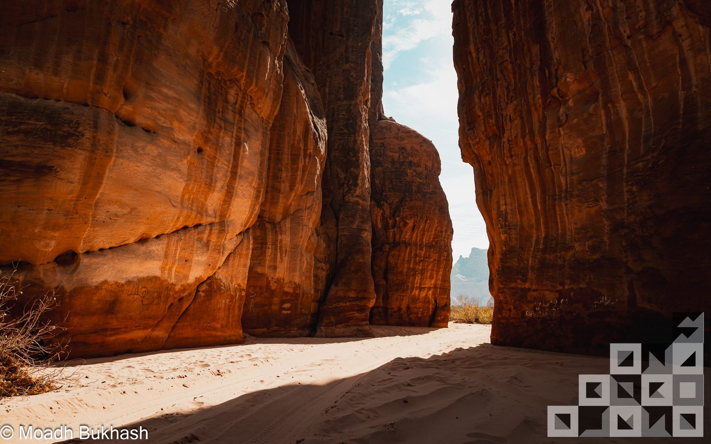
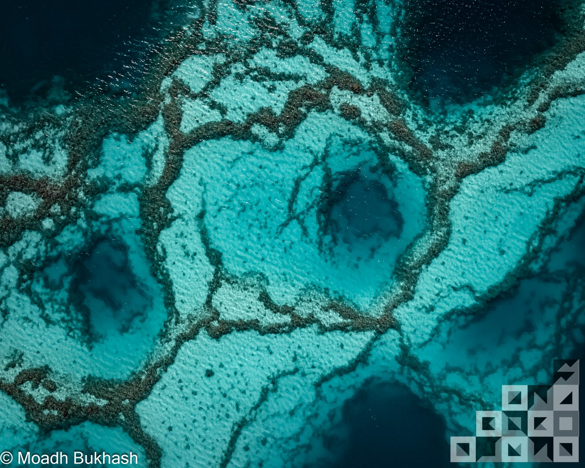
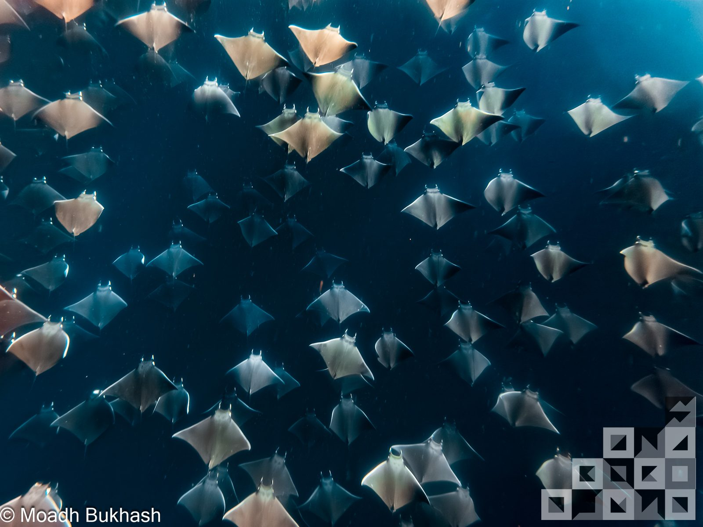
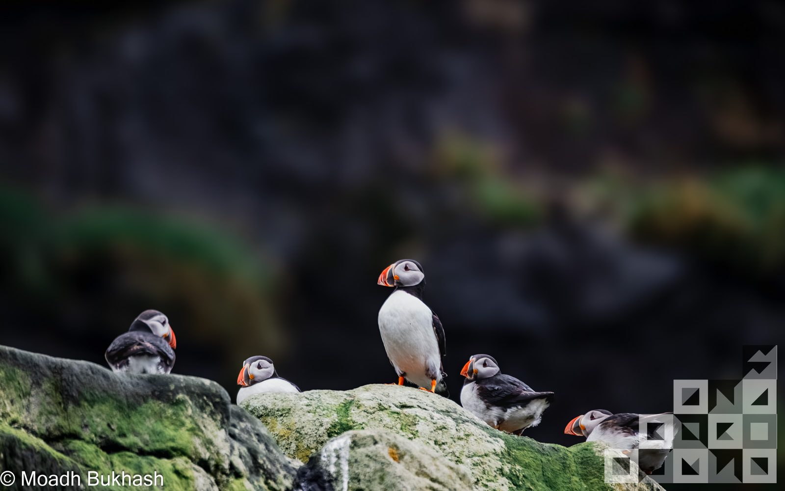
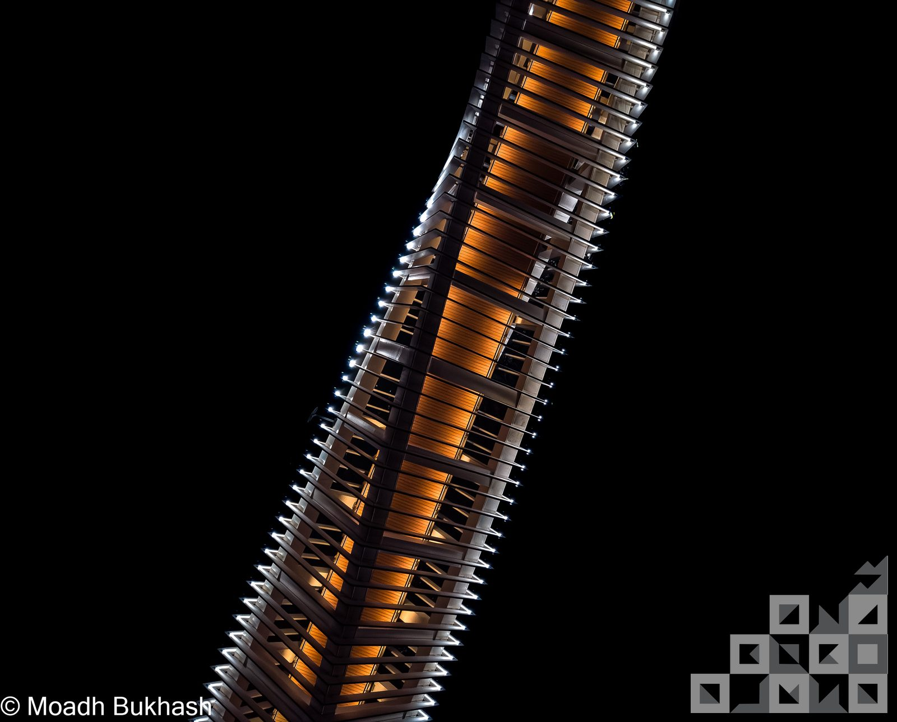

— 01
Scale markers.
A small figure, a vehicle, a single tree against vastness. The frame proves the world is bigger than the body.
 Brand System
Brand System
The brand is built around the photographs — the rest of the system is scaffolding. The pictures themselves carry their own discipline: where the camera points, how light is held, what stays in frame and what is left out. This page documents that discipline.

The work returns to five subjects, not by plan but by gravity. Anything outside this list belongs to a different photographer.





People as portraits. Indoor work. Studio setups. Anything contrived. Anything where the photographer becomes part of the scene.
Color is the default — it lives inside the photograph because it lives inside the world. Brand elements stay monochrome; photographs do not. The rules below govern what to keep and what to leave alone.
The work happens at first light, last light, and the blue minutes that bracket them. Midday is rejected unless the subject demands it.
Mist, dust, water vapour, falling snow — these are not obstacles to be cleaned up in post. They are the texture that gives the frame depth.
No over-grading. Warm desert reads warm; cool alpine reads cool. The frame should look like the moment, not like a filter.
Convert to monochrome only when colour distracts from form — usually underwater wildlife, occasionally a portrait of architecture. Never as default.

Four composition habits run through every frame. Together they describe what makes a picture feel like an MB picture, before anyone reads the watermark.
A small figure, a vehicle, a single tree against vastness. The frame proves the world is bigger than the body.
Empty sky, empty water, empty ground — most of the frame holds nothing. The subject earns its place by not being crowded.
From altitude, repetition appears — dune ridges, reef contours, city blocks. Aerial work is permission to see geometry.
Foreground, midground, atmospheric background. Distance carries colour shift; the frame breathes back to back to back.
Each finished image releases in three forms. Each form serves a different audience and carries its own protection.

The watermark is a discreet wordmark — "MOADH BUKHASH PHOTOGRAPHY" set in Inter at 14px, white at 0.6 opacity, lower-right corner with 24px padding. Never overlay the brand anchor on a photograph — the anchor is reserved for plain backgrounds only. Never tile across the image; never centre; never compete with the subject.
A still does not travel as one file. It is exported once per channel — each with its own aspect, resolution, colour space, and watermark rule. Export from the master TIFF; never re-compress a JPEG.
Not every picture is an edition. The decision to release as a limited print is its own act of selection. The rules below decide which frames cross that line.
Every other page in this system serves the picture. This page describes what the picture itself owes.